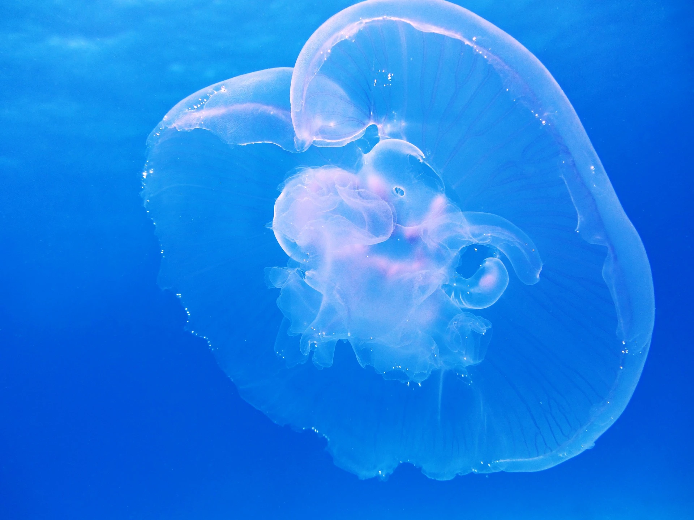
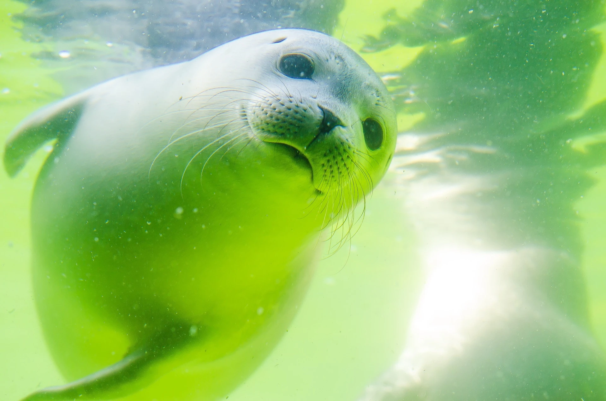

Ein Meerestier ist ein Tier,dessen hauptsächlicher Lebensraum das Ökosystem Meer ist.
Part 1

Der Begriff bezeichnet keine natürliche Verwandtschaftsgruppe (Taxon) im Sinne der biologischen Systematik, sondern ist eine Sammelbezeichnung für Tiere, welche dem marinen Plankton, Nekton oder Benthon angehören. Im weiteren Sinn gehören auch bestimmte Seevögel (z. B. Pinguine), Wasserschildkröten und Robben, deren Jungen an Land zur Welt kommen, zu den Meerestieren.
Viele der heute das Meer bewohnenden Arten sind nicht dort entstanden, sondern stammen von Formen ab, die vom Land (z. B. Wale) oder aus dem Süßwasser (z. B. Echte Knochenfische (Teleostei)) eingewandert sind und sich sekundär an ein Leben im Meer angepasst haben.
Part 2

Von den rund 8,7 Millionen Arten von Organismen sind circa 2,2 Millionen Meerestiere.Nur 12 Prozent der Meerestiere sind Fische. Krustentiere machen ein Fünftel der beschriebenen Arten aus. Den größten Anteil der unter Wasser lebenden Lebewesen stellen jedoch die Meeresmikroben dar. Forscher gehen davon aus, dass es mehrere Milliarden Mikrobenarten gibt, die noch entdeckt werden müssen.
Es wird allgemein davon ausgegangen, dass das Leben im Meer entstanden ist und sich die Lebewesen zunächst nur in diesem Lebensraum mit seinen physikalisch relativ homogenen Bedingungen ausgebreitet haben.